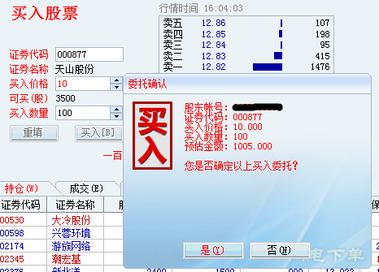

这辈子估计和程序化交易分不开了。然而国内不允许开放程序化交易接口（也幸好不开放，否则股市没这么好赚钱了），所以我要程序化交易，就只能自己想办法解决交易接口。
怎么解决呢？考虑到我就自己用用，而且不需要高频交易，那就给华泰证券的独立下单软件写一个外挂呗~现在外挂已经写好了，再也不需要每天在开盘前战战兢兢地手工下单了。一条命令，我的代码就会自动进行持仓校验并自动下单。高效，还没有出错风险。
至于这个外挂，我大学期间已经写了三遍了，这次用了Python，算是选对语言了，非常方便，反正我又不需要高性能。而且有Windows编程基础，结合Python对Windows API的绑定pywin32项目，简直得心应手~最关键的是，这次我的实现完全基于Windows消息机制，不操作鼠标键盘，无需把华泰证券的客户端设为前台程序，于是没有了操作时序出错风险。
屁话一堆，步入正题。在外挂的编写过程中，常常需要获取某个文本控件（不管是输入框还是静态文本控件）的内容。比如说，当下了单点击了“买入”后，会弹出一个“委托确认”框，那么我需要读取对话框里面的字符串，从而判断信息是否正确无误。

过去呢，我总是使用GetWindowText()这个函数，其原型如下：
Int GetWindowText(HWND hWnd,LPTSTR lpString,Int nMaxCount);
假设某个窗口句柄是0x1234，那么要获取其text就这样：
char str[1024]; int len=GetWindowText(0x1234,str,1024);
这里字符串最大容纳1024字符。一开始用的挺好的，但是后来发现，这种方法只能获取静态文本控件的内容，而无法获取输入框的内容。仔细查看了API文档，发现GetWindowText()的说明是这样的：
如果目标窗口属于当前进程，GetWindowText函数给指定的窗口或控件发送WM_GETTEXT消息。如果目标窗口属于其他进程，并且有一个窗口标题，则GetWindowText返回窗口的标题文本，如果窗口无标题，则函数返回空字符串。
华泰证券客户端对于我的外挂而言并不是当前进程，所以就只能获取“窗口标题”。而静态文本的内容就是其标题，所以能够获得。文本框控件的标题和内容是两码事，所以无法获取。那怎么办？上面这段说明中的WM_GETTEXT引起了我的注意！我能否手工发送WM_GETTEXT给指定的控件，从而封装一个可以跨进程的GetWindowText()？
经过试验，发现是可以的。
char str[1024]; int ret=SendMessage(hwnd,WM_GETTEXT,1024,str);
第一个参数是控件句柄，第三个参数是最大长度，第四个参数是字符串缓冲区。这个调用的返回值不一定是获取的字符串的长度，而是可以由控件自己决定。经过试验，这样确实可以获取指定文本控件（除了密码框）的内容，而且对静态文本也一样有效。
但还没完，还有两个问题需要解决：
- 中文的编码问题；
- 如何判断缓冲区足够长。
Windows内部使用的是多字节字符集，而Python内部使用UTF-8。这之间的转换一开始搞得我非常头疼。虽然现在我也没有搞清里面具体的细节，但是我已经找到了转换的方法，就是使用pywin32提供的方法：
import ctypes import win32api import win32gui import win32con import pywintypes # 字符串最大长度 max_len=1024 # 创建字符串缓冲区，相当于C++中new char[max_len] buf=ctypes.create_string_buffer(max_len) # 获取内容 win32gui.SendMessage(hwnd,win32con.WM_GETTEXT,max_len//2,buf) # 转成utf-8 text=pywintypes.UnicodeFromRaw(buf.raw)
是的，用pywintypes.UnicodeFromRaw()就能够转换成Python可以识别的编码了。另外为啥要max_len//2呢？这是因为Windows内部，用两个字节表示一个字符（也就是wchar_t），所以最大容纳的字符串长度需要折半。
第二个问题，如何判断缓冲区已经足够长？经过试验发现，如果缓冲区足够长，那么前面n个字节有非零数据，而后面的所有字节都是0（应该是create_string_buffer()把缓冲区清空了，而SendMessage()只填充了开头的字节）。考虑到Windows中的wchar_t使用两个字节，所以“最后4个字节为0”是“缓冲区足够长”的充分条件。如果不够长，那么把缓冲区扩大一倍重试呗，反正Python不在乎性能~
import ctypes
import win32api
import win32gui
import win32con
import pywintypes
# 获取指定控件的内容
# hwnd: 窗口句柄
# max_len: 缓冲区的最大长度，如果不够长，会自动扩张
# 返回: 内容，失败返回None
def get_item_text(hwnd,max_len=4):
while True:
# 创建char[]
buf=ctypes.create_string_buffer(max_len)
# 获取内容
if win32gui.SendMessage(hwnd,win32con.WM_GETTEXT,max_len//2,buf)==0:
return None
# 如果以0,0,0,0结尾，说明缓冲区够大
if (buf.raw[-4],buf.raw[-3],buf.raw[-2],buf.raw[-1])==(0,0,0,0):
# 转成utf-8
text=pywintypes.UnicodeFromRaw(buf.raw)
# 去掉末尾的0就能返回
return text.strip('\00')
# 否则把缓冲区扩大一倍重试
else:
max_len*=2